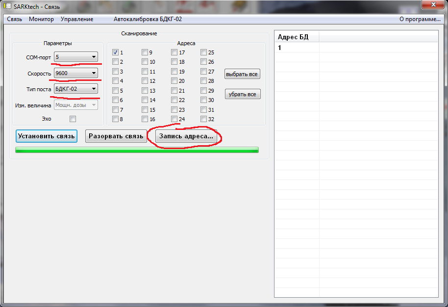

Адаптер 941.
- Поставить перемычку
- Подключить питание и USB-адаптер
- Запустить Flip
- Выбрать микросхему [1] — AT89C51ED2
- Выбрать порт с подключенным USB-адаптером [2]. Нажать Connect
- Выбрать прошивку [3]
- Оставить флажки "Erase" и "Program"
- Нажать "Run"
- После окончания процесса прошивки снять флаг "BLJB" и поставить уровень "Level 2"
- Достать перемычку!
- Если не шьется — проверить ток (в разрыв 12V питания), должно быть не более 50mA


- Подключить питание и USB-COM адаптер
- Запустить SARKtech
- Выбрать порт с подключенным USB-COM адаптером
- Нажать "Запись адреса" и ввести необходимый номер адреса 
- Для проверки: выбрать номер записанного адреса и нажать "Установить связь". Адаптер должен сразу же подключиться
- После прошивки и проверки работоспособности адаптера, на контроллер наклеить наклейку с версией прошивки и номером адреса или сделать соответствующую надпись маркером